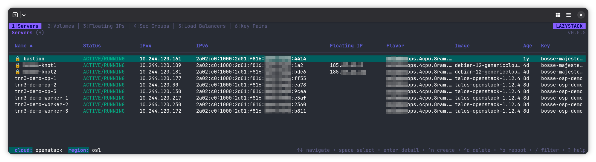

Manage OpenStack like you manage Kubernetes with k9s.
Single binary. No runtime deps. Reads your clouds.yaml.
openstack server list --longj / k
Dynamic tabs adapt to your cloud's service catalog. Auto-refresh runs in the background. Bulk-select with space, then act on the whole selection at once.

Dynamic tabs — they appear only when the service is there. No Cinder, no Volumes tab. No Octavia, no Load Balancers tab. Everything else works the same way across every view.
List, create, delete, rebuild, resize, rescue, snapshot, clone. Bulk operations across selected servers.
Create, attach, detach. Server picker with type-to-filter. Cross-navigate to the attached instance.
Allocate, associate, disassociate, release. Auto-allocates from the first external network when none are free.
Groups expand in place to show rules. Create, delete, edit inline without leaving the tab.
All in one combined view. IPv6-aware with address-mode and RA-mode configuration.
Create and delete routers. Add or remove interfaces via subnet picker with optional custom IP.
RSA and ED25519 generated locally, or import from ~/.ssh/. Save the private key with 0600.
File picker, format auto-detection, progress bars. Delete, deactivate, or re-enable.
Load balancer to listener to pool to member. Full CRUD, cascade delete, bulk member ops.
Compute, network, storage — all three on one screen. Color-coded bars for what's under, near, or over limit.
Re-scopes Keystone auth to a new project without restarting. Tabs reset cleanly, auth persists.
Flip between every cloud in your clouds.yaml. Dynamic tabs re-evaluate against the new service catalog.
Single Go binary, statically linked. No runtime deps — just the compiled binary and your clouds.yaml.
$brew install larkly/tap/lazystack
$yay -S lazystack
$sudo dpkg -i lazystack_*.deb
$sudo rpm -i lazystack-*.rpm
$go install github.com/larkly/lazystack/cmd/lazystack@latest
$curl -L github.com/larkly/lazystack/releases/latest
clouds.yaml · Go 1.26+ to build from source
We won't list every shortcut here — they evolve. The system doesn't. Once you know the shape, the rest is muscle memory.
Navigate, filter, sort, scroll, select. If it can't break anything, it takes one keystroke.
Delete, reboot, rebuild, resize. Always paired with a confirmation modal. Fat-fingers stay harmless.
Numbers jump straight to a resource. Arrows cycle. Same behaviour in every view.
? inside lazystack.Every current keybinding, grouped by context, always up-to-date. That's the source of truth — this page isn't trying to be one.
Install once, then never reach for Horizon again.